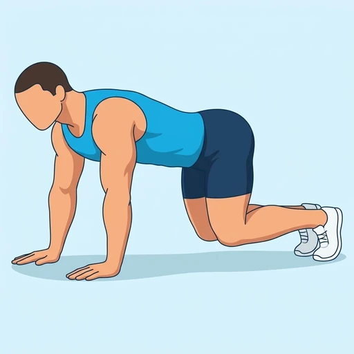

Bear Plank Hold
A static core hold on hands and knees in which the knees hover just above the floor while the back stays flat. It trains the abdominals and shoulders to stabilise the trunk and is a stepping stone to the full plank.
Core · Bodyweight · Beginner

Muscles worked by the Bear Plank Hold
Primary
Secondary
Also called: abs, six-pack, rectus abdominis, abdominals, stomach muscles, transverse abdominis.
Equipment
No equipment — this is a bodyweight exercise.
How to do the Bear Plank Hold
- Start on hands and knees with the hands under the shoulders and the knees under the hips.
- Tuck the toes under and brace the abdominals so the back is flat.
- Press into the hands and lift the knees a couple of inches off the floor.
- Hold the position with the hips level and the head in line with the spine.
- Breathe steadily, then lower the knees to rest.
Form tips
- Keep the knees close to the floor; lifting them higher turns the hold into a pike.
- Spread the fingers and push the floor away so the shoulders do not collapse.
- Keep the neck long and look at the floor slightly ahead of the hands.
At a glance
| Body part | Core |
|---|---|
| Category | Strength |
| Force type | Static |
| Mechanic | Compound |
| Difficulty | Beginner |
| Equipment | Bodyweight |
| Goals | Endurance, Strength |
| Tags | Core, Calisthenics, Lower back safe, Knee safe, No axial load, Shoulder safe |
| MET | 5.0 (metabolic equivalent, for calorie estimates) |
| Unilateral | No |
| Bodyweight | Yes |
| Dataset id | bear-plank-hold |
Bear Plank Hold in German & Spanish
| German | Bear-Plank-Halt |
|---|---|
| Spanish | Plancha del Oso Isométrica |
Descriptions, instructions and tips ship in all three languages in the JSON.
Related exercises
Exercise data (JSON)
The record below is exactly what exercises.json ships for this exercise — names, descriptions, instructions and tips in English, German and Spanish.
{
"id": "bear-plank-hold",
"name_en": "Bear Plank Hold",
"name_de": "Bear-Plank-Halt",
"name_es": "Plancha del Oso Isométrica",
"description_en": "A static core hold on hands and knees in which the knees hover just above the floor while the back stays flat. It trains the abdominals and shoulders to stabilise the trunk and is a stepping stone to the full plank.",
"description_de": "Ein statischer Rumpfhalt im Vierfüßlerstand, bei dem die Knie knapp über dem Boden schweben und der Rücken flach bleibt. Er schult Bauchmuskeln und Schultern darin, den Rumpf zu stabilisieren, und ist eine Vorstufe zur vollen Plank.",
"description_es": "Un mantenimiento estático de core a cuatro apoyos en el que las rodillas flotan justo encima del suelo mientras la espalda permanece plana. Entrena el abdomen y los hombros para estabilizar el tronco y es un paso previo a la plancha completa.",
"category": "strength",
"force_type": "static",
"mechanic": "compound",
"difficulty": "beginner",
"body_part": "core",
"primary_muscles": [
"rectus_abdominis",
"transverse_abdominis"
],
"secondary_muscles": [
"anterior_deltoid",
"obliques",
"quadriceps",
"serratus_anterior"
],
"goals": [
"endurance",
"strength"
],
"tags": [
"core",
"calisthenics",
"lower_back_safe",
"knee_safe",
"no_axial_load",
"shoulder_safe"
],
"variation_group": "plank",
"is_unilateral": false,
"is_bodyweight": true,
"instructions_en": [
"Start on hands and knees with the hands under the shoulders and the knees under the hips.",
"Tuck the toes under and brace the abdominals so the back is flat.",
"Press into the hands and lift the knees a couple of inches off the floor.",
"Hold the position with the hips level and the head in line with the spine.",
"Breathe steadily, then lower the knees to rest."
],
"instructions_de": [
"Geh in den Vierfüßlerstand, die Hände unter den Schultern und die Knie unter der Hüfte.",
"Stell die Zehen auf und spann die Bauchmuskeln an, sodass der Rücken flach ist.",
"Drück dich in die Hände und heb die Knie ein paar Zentimeter vom Boden ab.",
"Halte die Position mit waagerechter Hüfte und dem Kopf in Verlängerung der Wirbelsäule.",
"Atme gleichmäßig und senke dann die Knie zum Ausruhen ab."
],
"instructions_es": [
"Colócate a cuatro apoyos con las manos bajo los hombros y las rodillas bajo la cadera.",
"Apoya las puntas de los pies en el suelo y contrae el abdomen para que la espalda quede plana.",
"Empuja con las manos y levanta las rodillas unos 5 cm del suelo.",
"Mantén la posición con la cadera nivelada y la cabeza alineada con la columna.",
"Respira con regularidad y luego baja las rodillas para descansar."
],
"tips_en": [
"Keep the knees close to the floor; lifting them higher turns the hold into a pike.",
"Spread the fingers and push the floor away so the shoulders do not collapse.",
"Keep the neck long and look at the floor slightly ahead of the hands."
],
"tips_de": [
"Halte die Knie dicht am Boden; hebst du sie höher, wird aus dem Halt ein Pike.",
"Spreize die Finger und drück den Boden weg, damit die Schultern nicht einsacken.",
"Halte den Nacken lang und schau auf den Boden etwas vor deinen Händen."
],
"tips_es": [
"Mantén las rodillas cerca del suelo; si las subes más, el ejercicio se convierte en una pica.",
"Separa los dedos de las manos y empuja el suelo para que los hombros no se hundan.",
"Mantén el cuello largo y mira al suelo, un poco por delante de las manos."
],
"met": 5.0,
"images": {
"flat": {
"main": "images/flat/bear-plank-hold-main.webp"
}
}
}Fetch just this exercise
const { exercises } = await fetch(
"https://exercise-dataset.com/exercises.json"
).then(r => r.json());
const ex = exercises.find(e => e.id === "bear-plank-hold");Free for personal and commercial in-app use with attribution (“Exercise data by RepDB”) — see the license and ready-made attribution snippets. Redistributing the data as a dataset or API is not permitted.